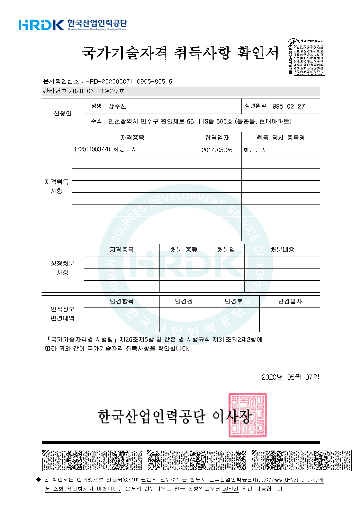

<div class="resume-section-content">
    <h2>Certifications</h2>
    <div style="width:40%; float:right; margin-top:50px">
        <a href="../assets/img/chen.png" target="_blank">
            
        </a>
    </div>
    <h3>어학</h3>
    <div class="about-container">
        <ul>
            <li>TOEIC Speaking<span class="date" style="padding-left:0.4em;">Lv.6(130)&nbsp;&nbsp;&nbsp;2017.05</span></li>
        </ul>
    </div>
    <h3>전공</h3>
    <div class="about-container">
        <ul>
            <li>화공기사<span class="date" style="padding-left:0.4em;">실기합&nbsp;&nbsp;&nbsp;2017.05</span></li>
        </ul>
    </div>
    <h3>컴퓨터 활용</h3>
    <div class="about-container">
        <ul>
            <li>컴퓨터활용능력 1급<span class="date" style="padding-left:0.4em;">2015.02</span></li>
            <li>데이터분석준전문가<span class="date" style="padding-left:0.4em;">2020.07</span></li>
            <li>SQL개발자<span class="date" style="padding-left:0.4em;">2020.10</span></li>
            <li>정보처리기사<span class="date" style="padding-left:0.4em;">필기합&nbsp;&nbsp;&nbsp;2021.03</span></li>
        </ul>
</div>
<div style="margin-top:1.5em; float:right;">
    <a href="{{ base.url }}/about/2"><i class="fa fa-arrow-left" aria-hidden="true"> 이전</i></a>
    &nbsp;&nbsp;&nbsp;
    <a href="{{ base.url }}/skill/2"><i class="fa" aria-hidden="true">다음 </i><i class="fa fa-arrow-right" aria-hidden="true"></i></a>
</div>